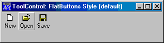
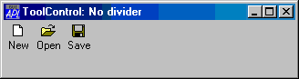

| Applies To: | ToolControl |
Description
The Divider property controls the presence or absence of a recessed line drawn above, below, to the left of, or to the right of a ToolControl object.
Divider is a single number with the value 0 (dividing line is not drawn) or 1 (a dividing line is drawn); the default is 1.
The pictures below illustrates a ToolControl drawn with and without a divider.

